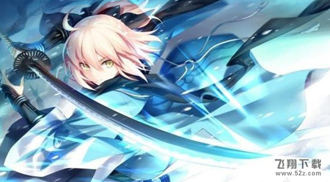

<!DOCTYPE html>
<html>
<head>
<meta charset="UTF-8">
<title>Insert title here</title>
</head>
<body>
	<br/>
	<font size="16" color="RED">冲田总司</font>
	<hr>
	<pre>
	冲田总司（おきた そうじ），天保15年（1844年）？～庆应4年5月30日（1868年7月19日），江户幕府末期武士，新选组一番队组长以及剑术指导。本姓藤原。名讳春政，后改为房良。幼名宗次郎。被盛赞为新选组中最强的武士。
游戏设定：
筋力：C
耐久：E
敏捷：A+
魔力：E
幸运：D
宝具：C
配卡：Arts（2hits）BusterBuster（1hits）QuickQuick（5hits）Extra（3hits）
宝具：无明三段突刺（Quick3hits）
对敌方单体进行无视防御力的超强力攻击&防御力大幅下降（3回合）
<OC效果上升30%-35%-40%-45%-50%>
宝具倍率为1200%1600%1800%1900%2000%
固有技能

缩地：BQ卡性能提升（1回合）
病弱：A赋予自身星星集中状态（1回合）
心眼（伪）：A赋予自身闪避状态（1回合）&暴击威力大幅度提升（3回合）
对魔力：E自身的弱体耐性少许提升(10%)
骑乘：E自身的Q卡性能提升少许(2%)
人物背景（摘自FGO手册）：
身高：158cm
体重：45kg
属性：中立·中庸
性别：女性
身着时髦的和服，十五岁左右的可爱少女。为了隐藏过于显眼的本来装束，而使用了这套衣装。兼有冷酷的杀手脸和招小孩子喜欢的脸。同时有着超绝技巧和天赋之才的真正的天才剑士，却以Saber直接的低耐久力、低对魔力引人注目。这是生前的病痛、以及后世民众的印象所改写的结果，某种意义上承受了和“无辜的怪物”相似的诅咒。对圣杯的愿望是“战斗到最后一刻”。完成生前未果的约定，是她的悲愿。
灵基突破：

一破：
银Saber棋子X510000QP
二破：
银Saber棋子X12黑灰X15300000QP
三破：
金Saber棋子X5齿轮X5龙牙X241000000QP
四破：
金Saber棋子X12齿轮X10羽毛X103000000QP
樱saber作为五星级剑士在本次活动中加入到了卡池，其游戏性各方面也被玩家大
量讨论，以下是樱saber的一些游戏性方面介绍：
①.满破需要15个齿轮。齿轮目前获取渠道只有活动兑换的20个，会和许多从者突破/升级技能材料冲突。酌情取舍。
②.在不考虑鞭尸、暴击、礼装、其他技能加成时，冲田各卡的np积累值近似如下：
可以看到的是，在有蓝卡首卡加成的时候，冲田后位绿卡的np积累能力是超越蓝卡的。
这种况景的产生主要是由于冲田绿卡是5hit，蓝卡则是2hit。在其他绿卡hit数高于蓝卡的从者中，实际并不少见。但冲田之所以会被反馈有超高的np积攒能力，还和另外两个因素有关。
	</pre>
</body>
</html>